This is the one project in the portfolio where the interesting logic IS the state machine. The diagram follows a real request through the breaker’s CLOSED → OPEN → HALF_OPEN → CLOSED cycle, including the exact transition conditions.

| Node | Location | What it does |
|---|---|---|
| ALLOWCHECK | app.py:generate() | breaker.allow_request() is checked BEFORE any network call — this is what makes the open-circuit path a 0.001s fast-fail instead of waiting out a 30-second timeout. |
| STATECHECK | circuit_breaker.py:record_failure() | Opens on EITHER of two conditions: already in HALF_OPEN (any failure there immediately reopens), OR consecutive_failures >= failure_threshold (3) from CLOSED. |
| TIMEPASS | circuit_breaker.py:state (property) | The OPEN → HALF_OPEN transition isn't triggered by any explicit call — it's computed lazily every time .state is read, by comparing now() - _opened_at against cooldown_seconds. |
| PROBERESULT | circuit_breaker.py | HALF_OPEN allows exactly one real request through as a test. Success fully resets to CLOSED (zeroing the failure counter, not just the label); failure reopens and restarts the cooldown clock. |
The common case — allow_request() returns True, the real Ollama call succeeds, record_success() keeps the breaker CLOSED.
Measured directly: after exactly 3 failed calls, the 4th request never even attempts the network call — a 503 in 0.001s instead of a connection timeout.
3× [DOCALL(fails) → RECORDFAIL → STATECHECK] → 3rd call: TOOPEN → 4th request: ALLOWCHECK(False) → FASTFAIL5 seconds after opening, the breaker's state read transitions to HALF_OPEN; a single successful probe request fully closes it again.
TOOPEN → [5s pass] → TIMEPASS(True) → TOHALFOPEN → PROBERESULT(succeeds) → RECORDSUCCESS → CLOSED